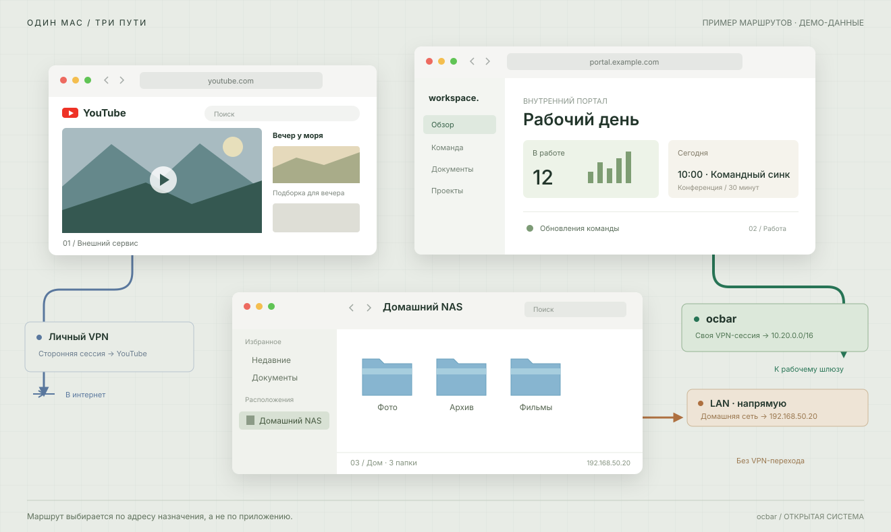
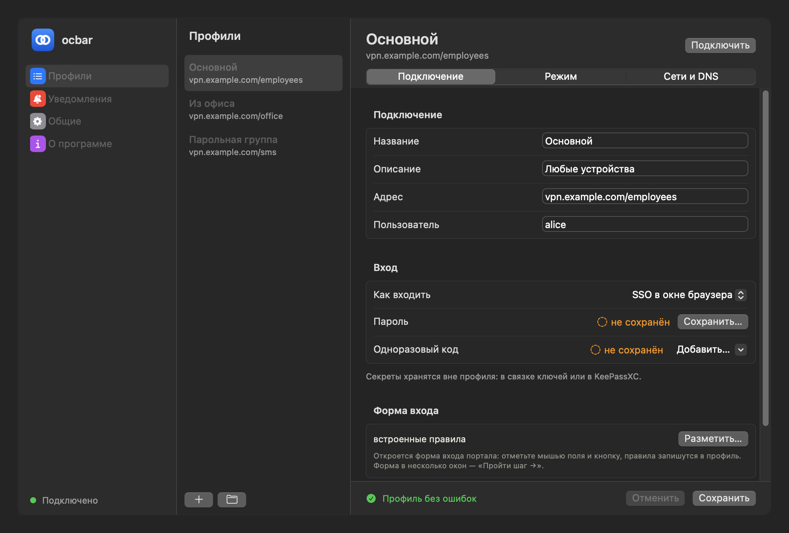
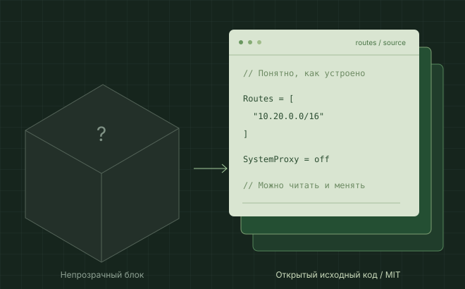

Настройки — коллегам
Передайте профиль .ocbar. Каждый входит со своей учётной записью.
Рабочая сеть — через ocbar.
Остальные маршруты — по вашему плану.


Пример при отсутствии конфликтов маршрутов и DNS. Full tunnel тоже может сохранять доступ к LAN. ocbar управляет одной собственной сессией; личный VPN настраивается отдельно.
Split DNS направляет рабочие имена к корпоративному DNS. Внешние имена — к обычному резолверу.
portal.example.com
youtube.com

Показана тёмная тема macOS
Передайте профиль .ocbar. Каждый входит со своей учётной записью.
Подключите свой wrapper. Решение о допуске принимает шлюз.
SOCKS с ocproxy и SystemProxy=off: без root, системных маршрутов и изменений DNS.
Откройте журнал и посмотрите, что происходило с соединением.
Можно увидеть, как устроен клиент. Разобраться, изменить, поделиться улучшением.
Исходники на GitHub